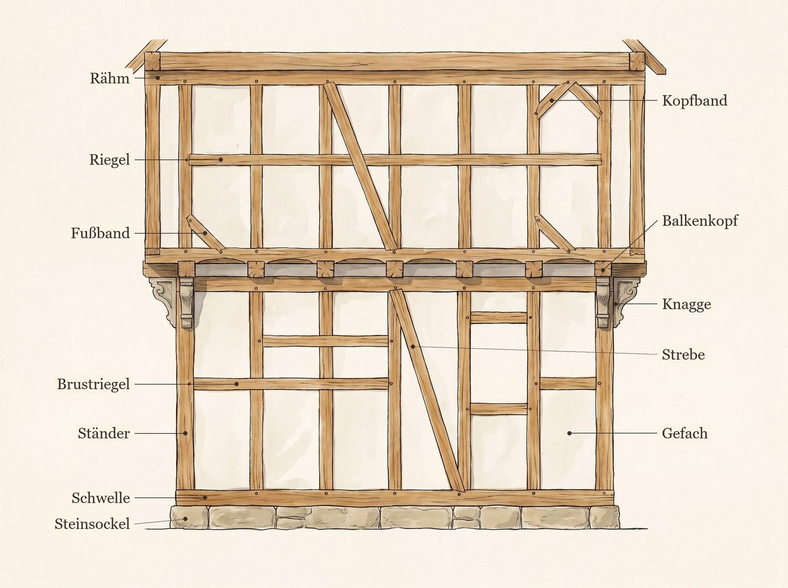

Station 5 auf dem Stadtplan
Die Entwicklung der Fachwerkhäuser im 12. und 13. Jahrhundert
Was ist ein Fachwerkhaus?
Karl Klöckner hat in seinem Buch „Alte Fachwerkbauten“ eine sehr treffende Definition für das Fachwerk verfasst:
"Als Fachwerk bezeichnet man eine Wandbauweise, bei der die Zwischenräume (Gefache) mit einem anderen Material ausgefüllt werden. Da aber im Normalfall Wände Teile von Gebäuden sind, ist Fachwerk - auch im allgemeinen Verständnis - eine spezifische Art und Weise, Gebäude zu errichten, bei denen die Außenwände und die inneren Trennwände aus Fachwerk bestehen. Decken und Dächer fallen nicht unter den Begriff des Fachwerks. Sie sind zwar hölzerne Gefüge, werden aber auf andere Weise geschlossen: durch Füllungen und Verbretterungen (wenigstens ursprünglich) bei Decken, durch eine Außenhaut aus unterschiedlichem Material bei Dächern.
Daneben gibt es Gerüste, deren Zwischenräume nicht oder nur teilweise geschlossen werden: Laubengänge, Vorhallen oder etwa die Ständerreihen im Inneren niederdeutscher Hallenhäuser. Es könnte hier von offenem Fachwerk gesprochen werden, doch ist dieser Begriff wenig gebräuchlich. Dach- und Deckenkonstruktionen waren (sind) in Steinbauten die gleichen wie in Fachwerkhäusern. Es ist also lediglich der Charakter der Wände, der einen Bau als Stein- oder Fachwerkbau definiert."
Warum hat gerade Esslingen so viele Fachwerkhäuser?
Esslingen hat heute mit über 200 mittelalterlichen Fachwerkbauten aus dem 13. bis 17. Jahrhundert den größten Bestand in der Region um den Neckar. Dazu gehören die ältesten Fachwerkhäuser Deutschlands von 1262-1667, eine vollständige Gasse um 1330 und außerdem alle mittelalterlichen Hausformen ab dem 12. Jahrhundert.
Um nun zu verstehen, warum gerade Esslingen noch so viele Fachwerkbauten hat, muss man sich die bauliche, wie auch die demographische Entwicklung der Stadt Esslingen anschauen.
Andere Städte, wie Stuttgart, Waiblingen, Schorndorf und Kirchheim haben heute keine alten Fachwerkkonstruktionen mehr. Frühere Brandkatastrophen und Kriegseinwirkungen, aber auch jüngere Eingriffe für Verkehrs- und Geschäftsbauten haben den Bestand dieser Bauten stark dezimiert.
Noch bis 1800 wohnten 90% der Stadtbewohner in Fachwerkhäusern. Sie konnten sich keine Steinbauten, wie der Adel, Klerus oder einige reiche Bürger sie besaß, leisten. Diese Fachwerkhäuser zeugen im Allgemeinen von der bürgerlichen Baukunst und Wohnkultur unserer Vorfahren.
Fachwerkhäuser bilden somit einen Übergang zwischen der Antike und der Baukunst der Neuzeit. Fachwerkbauten des Mittelalters verbindet also rund 2000 Jahre Baukunst.Die Entwicklung von Holzkonstruktionen in dieser Form gehört zu den ältesten großtechnischen Kulturleistungen unserer Heimat.
Esslingen wurde durch die Errichtung einer Pfalz und einer Münz-Präge (Es-Denare) durch Herzog Liudolf (951) zu einem Stützpunkt der Herzöge von Schwaben.Unter Herzog Rudolf von Rheinfelden wird Esslingen 1077 als Oppidum (früher stadtähnlicher Ort) bezeichnet. Neben Handwerkern arbeiten jetzt auch Fernhandels-Kaufleute in Esslingen.
Ende des 12. Jahrhunderts gelangt Esslingen nach Kämpfen der Herzöge gegen Heinrich IV in Staufischen Besitz. Esslingen wird zum Verwaltungszentrum erhoben, sowie durch die Ausbreitung seines Weinanbaus zum bedeutenden Weinort. 1229 wird der wichtige Ort vollends zur Stadt erhoben.
Vom Reichtum und der Macht der Stauferstadt zeugt auch der Boom der Fachwerkhäuser in Form von Stadthäusern als Geschossbauten. Zwischen 1200 und 1300 verdoppelt sich die Zahl der Bürger von 2000 auf 5000. Somit wird Esslingen eine mittelgroße Stadt.
Es wurde also eine Möglichkeit gesucht auf eine kostengünstige Art und Weise Häuser zu bauen, die viel Platz boten und viele Jahre ihre Standhaftigkeit behielten.
Die antiken und frühmittelalterlichen Pfostenbauten hatten nur eine kurze Lebensdauer und wenig Tragkraft, da die unteren hölzernen Teile leicht abfaulten.
Erst nachdem man zum Schutz vor Bodenfeuchtigkeit die tragenden Pfosten (Ständer) auf Steine, bzw. in niederen Mauern von mindestens 25cm Höhe verzapft hatte, erhöhte sich die Lebensdauer der Gebäude.
Da nun beim Ständerbau die Verankerung im Boden fehlte, mussten neue Wege gefunden werden, um besonders die Seitenkräfte durch Winddruck, Senkung und andere Kräfte aufzufangen, die auf das Ständer-Balken-Gerüst einwirkten.
Mit der Zeit entwickelten Baumeister und Zimmerleute eine komplizierte Gefüge-Technik mit Ankerbalken, die mit schräg angebrachten Bändern für die notwendige Seitenstabilität bzw. Versteifung am Bauwerk sorgten.
Grundaufbau eines Fachwerkhauses

Der Fachwerkbau ist ein Skelettbau.
Dabei wird der Rohbau des Bauwerks aus Elementen zusammengesetzt, die primär tragende Funktion haben. Wie bei einem Skelett entsteht so eine Tragstruktur.
Die vertikalen Hölzer werden als Pfosten, Stiel, Stütze, Stab oder Ständer, die leicht schräg stehenden als Strebe, oder Schwertung bezeichnet, die horizontalen als Schwelle, Rähm oder Riegel. Im Winkel von meist 45° verlaufende Hölzer zur Querstabilisierung nennt man Bänder oder Bug, sie verbinden die senkrecht aufeinander stehenden Teile. Streben sind oft symmetrisch angeordnet und zeigen dann oft nach oben und außen.
Als Knagge werden Aussteifungen, die zur Abtragung von Lasten zwischen den Ständern und den ausragenden Deckenbalken dienen soll, bezeichnet.
Häufig sind die Knaggen mit Schnitzereien, Figuren oder Ornamenten versehen. Im Gegensatz zum Kopfband oder zum Bug befindet sich die Knagge nicht im Gefache, sondern bildet ein aus dem Wandgefüge herausragendes Konstruktionselement.
Die Hölzer haben einen Querschnitt von 10 x 10 bis 18 x 18 cm. Aufeinander treffende Teile werden meist verzapft und mit Holznägeln gesichert. Dabei werden die Löcher leicht versetzt gebohrt, damit die Zapfen ins Zapfenloch gezogen werden. Die verwendeten Holznägel haben einen Druchmesser von etwa 2 cm und sind mindestens 2 cm länger als die Stärke des Balkens beträgt, sie stehen über.
Das auffälligste äußere technische Merkmal sind die stabilisierende Versteifungen.
Bei Bauten vor 1550 findet man stabilisierende Versteifungen in Form von „verblatteten“ Bändern „vor“ der Ausfachung. Bei Bauten nach 1550 befinden sich die Bänder eher innerhalb der Ausriegelung mit Mauerwerk und wurden verzapft.
Die stabilisierenden Versteifungen sitzen mit dem dünnen Blattende in den Blattsassen der senkrechten Ständer und waagrechten Schwellen, sowie den Balken und Rähmen oben im Gefach .
Die Bauteile werden beim Zuschnitt mit Abbundzeichen, Zahlenfolgen oder Muster, versehen, um sie am Bauplatz schnell und richtig zusammensetzen zu können.
Material
Als Holzart wird zumeist Stieleiche oder Traubeneiche, in nadelholzreichen Gebieten Tanne verwendet, da sie witterungsbeständig sind und Fäulnis widerstehen. Zusätzlich war Holz meist eher verfügbar als geeignete Steine und ließ sich vor allem leichter transportieren (auf dem Wasserwege geflößt).
Die Zwischenräume (das Gefach) werden entweder mit einem Holzgeflecht mit Lehmbewurf ausgefüllt, mit sichtigen Backsteinen ausgemauert, oder mit Lehmbausteinen verbaut und verputzt.
Die erstgenannte Technik leitet sich von der Flechtwerkwand ab, die als eine der ältesten Baukonstruktionen gelten kann.
Das Holzgeflecht ist aus festen Hölzern (Lehmstaken), auch zusätzlich aus biegsamen Ruten (Fachgerten) aus einem Holz wie Weide.
Obwohl Lehm schon im Mittelalter den Ruf eines ärmlichen Baumaterials hatte, war es als Ausfachungsmaterial bis in das letzte Jahrhundert üblich gewesen,.
Dies ist auf die kostengünstigen und technischen Vorteile des Materials zurückzuführen. Meist konnte der Lehm direkt vor Ort, oft direkt aus der Baugrube, ausgegraben werden. Dazu hin hat Lehm die Eigenschaft sich den Verformungen der Holzkonstruktion, dem Arbeiten, bestens anzupassen. Weiter hat Lehm durch die feuchtigkeitsregulierende Wirkung einen konservierenden Einfluss auf das Holz des Fachwerks. Die Endfeuchtigkeit von Lehm ist geringer als die von Holz, somit sorgt der Lehm dafür, dass das Holz trocken bleibt und nicht faulen kann.
Mittelalterliche Fachwerkarchitektur in Esslingen
Entwicklung vom Geschossbau zum Stockwerksbau
Die mittelalterlichen Skelettbauten in Esslingen besitzen alle ein Ständer-Balken-Gerüst mit verblattetem Gefüge sowie Gefach mit Flechtwerk oder Bohlenwänden. Die Bauelemente sind nur funktional-konstruktiv eingesetzt, die Gebäude waren meist ohne Schmuck durch Zierhölzer, Schnitzwerk oder Bemalung.
Von 1100 bis 1300 war der Firstständerbau weit verbreitet. (1297, Ehnisgasse 18)
Zwei gemeinsam gezimmerte Geschosse, Erd- und erstes Obergeschoss, werden mit asymmetrischen Fuß- und Schwertbändern verzapft. In der Regel gab es aus Platzgründen einen tiefen Grubenkeller mit einem Dielen- oder Lehmboden, die nicht nur Wirten, Handwerkern und Kaufleuten als kühle Vorratsräume, sondern vor allem für die Esslinger Winzer nützlich war. Im Mehrzweckhaus blieben Wohn- und Arbeitsebene über dem Boden, der Dachboden wurde meist als Speicher benutzt.
Im Gegensatz zum meist dörflichen Mehrzweckhaus des Mittelalters, in dem Arbeiten und Wohnen auf einer Ebene als Regel galt, umfasste der Begriff „Stadthaus“ im weiteren Sinne alle meist zwei- bis mehrgeschossigen Bauten des kirchlich-klösterlichen, herrschaftlichen, kommunalen oder privaten Bereichs einer stadtähnlichen Siedlung.
Bereits Anfang des 13. Jahrhundert wurde der Firstständerbau durch den Geschossbau abgelöst. Neu waren das Sparrendach und der Kehlbalken, genau wie die steilere, leicht gotische Dachform. (1299, Rossmarkt)
Im Allgemeinen unterscheidet sich der Geschoss- bzw. Firstständerbau vom Stockwerksbau darin, dass nun nicht ein durchgängiger Pfosten bis zum First reicht, sondern jedes Stockwerk einzeln abgezimmert wird.
Das Sparrendach wird von Zimmerern gebaut, wenn das Dach nicht sehr groß ist, oder die Außenhaut des Bauwerkes diese Konstruktion zulässt. Das Sparrendach besteht aus einzelnen Dachbindern die jeweils aus zwei Sparren und einem Dachbalken bestehen. Diese sind fest miteinander verbunden und werden separat auf die Außenhaut des Bauwerks aufgelegt und befestigt.
An der Abzimmerung veränderte sich jedoch nichts. Ebenso gab es wie vorher einen Rauchabzug durch die Rauchlöcher an den Giebeln.
Mitte des 14. Jahrhunderts (1348, Obertorstr. 74; Milchstraße 11) kam zur üblichen Abzimmerung nun eine einseitige Kragung hinzu. Es gab jedoch noch immer keine Kamine, sondern weiterhin nur einen Rauchabzug über die Rauchlöcher in den Giebeln.
Frühgotische dreistöckige Hausertypen kamen vermutlich zwischen 1250 und 1400 hinzu (1262, Heugasse 3; 1267, Webergasse 8). Beim Mischgerüst, das heißt eine Vorderseite mit Stockwerkbauweise und Auskragung und eine Längsseite mit Geschossbau, gab es immer noch asymmetrische Bänder und ein Sparrendach ohne Dachstuhl. Die Giebel- oder Traufkragung wird mit Knaggen abgesichert.
Beim späteren Hochgotischen Typ um ca. 1350 bis 1400 gab es bereits eine Giebel- und Traufkragung vor allem bei Eckhäusern.
Solche Kragungen wurden mittels eines Stichgebälks mit Gratstichbalken gestützt und verzapft. Die über die Giebelwand vorstehenden Kragbalken werden in den letzten Querbalken mit Zapfen eingestochen.
Die Bauordnung von 1544 der Reichsstadt Esslingen verbiet vollends die Verblattung und schrieb verzapfte Streben, Ausmauerung der Gefache und kleine Kragungen (vorwiegend eine Balkenbreite) vor.
Näheres zu einzelnen Häusern in Esslingen:
Geschossbau- bzw. Firstständerbau:
Ehnisgasse 18, gebaut 1297/98 d, ist ein gutes Beispielt dafür, dass auch in Esslingen die entwicklungsgeschichtlich älteste Fachwerk-Konstruktion Südwest-Deutschlands verwendet wurde. Allerdings war sie bereits um 1300 ein Auslaufmodell und fand auch keine Nachfolger.
Der sparsame Holzverbrauch bei einer so einfachen Konstruktion weist auf einen Bauherr der Unterschicht (Kleinbauer, Weingärtner, Kleinhandwerker und Kleinhändler) der Reichsstadt hin.
Der Gewölbekeller diente ihm, wie der Dachraum bis zum Kehlbalken als Speicher. Man kann annehmen, dass er das Erdgeschoss als Werkstatt, bzw. als Lager / Laden oder Stall mit Arbeitsräumen nutzte. Das Obergeschoss fungierte als Wohnraum.
Die deutlich asymmetrisch angeblatteten Schwertungen, welche den Giebel stabilisieren, reichen nur vom Obergeschoss bis zum Dachraum.
Geschossbau mit Sparrendach:
Rossmarkt (1299, 1300 d)
Dieser mehrmals veränderte Neukonstruktion ohne Firstständer und selbsttragendem Sparrendach wurde um 1299/1300 gebaut. Das Dach wird durch Kehlbalken verstärkt. Kragungen wurden erst durch den Verzicht von Firstständern möglich.
Dies zeigt in der Obertorstr. 74, gebaut 1348, das Haus mit einer Traufkragung von etwa 40cm. Das Haus in der Milchstraße 11 besitzt sogar eine Giebelkragung von ca. 80cm. Abgestützt werden diese Kragungen mit der Büge, einem Vorläufer der Knagge.
Dreigeschossige Ständerbauten mit Mischgerüst und großer Kragung
Um die Mitte des 13. Jahrhunderts schaffen es reiche Bürger und Zünft mehr Einfluss auf das Stadtgeschehen zu bekommen. Dadurch will die bürgerliche Oberschicht höhere Bauten erschaffen. So entstehen dreigeschossige Fachwerkbauten, beispielsweise on der Heugasse 3 (1262 d) und besonders in der Webergasse (1267/68 d), die beide als die zurzeit ältesten Fachwerkhäuser Deutschlands gelten.
Diese Neue Mischkonstruktion jedoch unterscheidet sich von herkömmlichen Mischkonstruktion, da sie einen seperaten Erdstock besitzen, der teilweise auch massiv gemauert wurde.
Darauf, dass der Erbauer ein Weinhändler gewesen sein muss, weist der große Gewölbekeller hin. Im Erdgeschoss muss er eine Werkstatt und Handlung gehabt haben.
Etwa um 1330, wie am Hafenmarkt 10, wurden aus einer mehrere Kragungen. So entstanden, die auch heute noch nach oben enger werdenden und damit dunkler wirkenden, Traufgassen.
Das Ende der mittelalterlichen Fachwerkkonstruktion
Nach 1544, nachdem die neue Bauordnung eingeführt wurde, geht die 500-jährige Entwicklung der mittelalterlichen Bauweise zu Ende, obwohl diese Konstruktionsart mit verblattetem Gefüge viele Vorteile besaß.
Sie war eine verhältnismäßig einfache, material-, zeit- und geld- sparende Holztechnik. Beschädigte Teile an Wänden waren leicht auszuwechseln, da die Gefügeelemente vor den Flecht- und Bohlenwänden angebracht wurde.
Außerdem waren die Flechtwände aus billigem Material: Spalthölzer aus Abfällen, Material von Ästen und Büschen, Lehm aus der Baugrube und der näheren Umgebung.
Diese Bauweise hatte jedoch einen entscheidenden Nachteil: Sie war zu leicht entflammbar. Wenn durch die Hitze der Lehmputz teilweise abfiel, brannte das Flechtwerk wie Zunder. Die Bänder lösten sich und das Haus stürzte ein.
Gerade in den engen Gassen führte das zu Feuerstürmen und Flächenbränden, wie die großen Brände von 1484 und 1701 zeigen.
Aus diesem Grund verbot die Neue württembergische Verordnung von 1568 die einfache Verblattung, und forderte mehr Einbau von gemauerten Teilen. Der untere Stock musste, wie die Seite zum Nachbarhaus, „bis unters Dach“ gemauert werden.